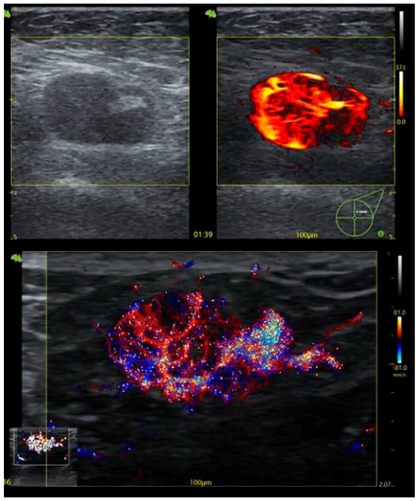
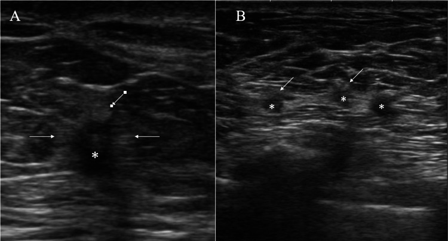
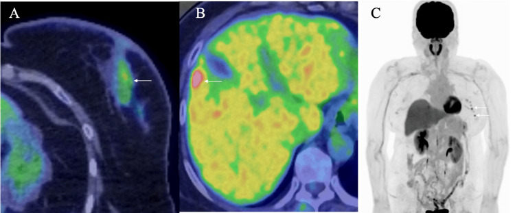

597 — Tái phát nách đơn độc sau điều trị bảo tồn & TAD: chẩn đoán, TAD cứu vãn vs ALND / Isolated axillary recurrence
Tags: pattern:hach-nach pattern:tai-phat vung:hach-nach vung:vu score:RECIST protocol:US-hach-nach protocol:TAD incidentaloma:hach-nach
Mức chắc chắn (certainty): tổng hợp y văn (literature synthesis) — số liệu từ đoàn hệ 21 ca tái phát nách, phân tích gộp 37 nghiên cứu, AMAROS 10 năm và nghiên cứu sàng lọc siêu âm; chưa có thử nghiệm ngẫu nhiên riêng cho phẫu thuật cứu vãn.
1. Tổng quan bệnh học – cơ chế hình ảnh
- Định nghĩa: tái phát nách đơn độc (isolated axillary recurrence — AR) = ung thư vú tái phát chỉ ở nách cùng bên, không có tái phát tại vú/thành ngực và không có di căn xa tại thời điểm chẩn đoán. Đây là tái phát vùng (regional recurrence), khác di căn xa về tiên lượng và điều trị.
- Tần suất: 1–2%, có chuỗi báo tới 15%; đa số xuất hiện trong 24–48 tháng đầu. Sau SLNB âm tính ở bệnh nhân ban đầu N+ đã hóa trị tân bổ trợ, phân tích gộp 37 nghiên cứu cho tỷ lệ 1% (KTC 95%: 0–1%; I² = 0%). Sau AMAROS 10 năm, tái phát nách tích lũy 0,93% (ALND) vs 1,82% (xạ nách) — khác biệt không có ý nghĩa (HR 1,71; 0,67–4,39).
- Vì sao vẫn phải coi trọng dù hiếm: tái phát vùng đơn độc là cửa sổ chữa khỏi. Sống 5 năm sau tái phát vùng đơn độc 45–80%; sống 10 năm 56% nếu mổ được + điều trị bổ trợ tích cực. Bỏ sót hoặc điều trị nửa vời = mất cơ hội đó.
- TẠI SAO hạch tái phát trông như vậy trên siêu âm: tế bào u xâm nhập vỏ hạch (cortex) trước, làm vỏ dày, giảm hồi âm, xóa mô mỡ rốn hạch (fatty hilum); khi u lấp toàn bộ hạch → hạch tròn, giảm hồi âm, mất rốn, có thể hoại tử (dịch trong) hoặc vi canxi. Vì vậy "mất rốn hạch" là dấu hiệu mạnh nhất, nhưng không đặc hiệu (viêm, xơ sau xạ, sarcoid, sau vaccine đều có thể).
- TẠI SAO FDG-PET/CT hữu ích nhưng không thay thế mô bệnh: tế bào u tăng đường phân → SUV tăng; nhưng hạch vi di căn hoặc hạch nhỏ có thể SUV thấp/âm, còn hạch viêm/phản ứng có thể SUV 4–5. Ngưỡng hình ảnh không đủ để chốt — sinh thiết lõi là bắt buộc trước khi mổ/xạ.
- Điều quan trọng nhất về sinh học: tái phát nách có thể đổi thụ thể (ER/PR/HER2) so với u nguyên phát. Đổi thụ thể đổi phác đồ toàn thân, nên mẫu mô mới có giá trị điều trị, không chỉ để xác nhận chẩn đoán.
2. Mẫu hình + chẩn đoán phân biệt theo vị trí (Gamut)
Theo hình thái trên siêu âm (pattern) → gamut khối vùng nách sau ung thư vú:
- Hạch to, mất rốn, vỏ dày không đều: tái phát hạch (chính); hạch phản ứng sau tiêm vaccine/nhiễm trùng; sarcidosis/lao hạch; lymphoma.
- Nhiều nốt nhỏ giảm hồi âm có quầng (halo): ổ tái phát mô mềm/trong đường bạch mạch (không có cấu trúc hạch) — bẫy hay gặp; cũng có thể là hạch thoái hóa mỡ, u mỡ, nang biểu bì.
- Khối đặc, không đồng nhất, có canxi: tái phát hạch hoại tử; di căn của ung thư khác; u mô mềm nguyên phát (sarcoma mô mềm vùng nách).
- Dịch/tụ máu, thành dày: hoại tử mỡ (fat necrosis) sau mổ/xạ; áp-xe; u hạt do silicone (silicone granuloma) ở người đặt túi ngực qua đường nách.
- Hạch bình thường nhưng toàn bộ nách "đầy" sau xạ: xơ hóa sau xạ, phù bạch mạch (bài 593) — không mặc định là tái phát.
Theo vị trí (location) — quyết định đường lấy mẫu & trường xạ:
- Nách cùng bên level I–II: vị trí thường gặp nhất; dễ sinh thiết dưới siêu âm.
- Level III / hạch Rotter / hạch ngực trong: khó lấy mẫu, thường cần PET/CT để phát hiện; là "vùng chuyển tiếp" giữa tái phát vùng và di căn.
- Hạch nách đối bên: không mặc định là di căn xa — sau mổ vú + xạ, dẫn lưu bạch mạch có thể chuyển sang nách đối bên → tái phát vùng đối bên; vẫn có thể mổ cứu vãn.
- Nách + hạch thượng đòn: tái phát vùng lan rộng → tiên lượng xấu hơn, cân nhắc điều trị toàn thân trước.
Gợi nhớ nhanh — "R-A-N-G-E": Recurrence (hạch), Accessory breast tissue (mô tuyến lạc chỗ trong nách), Node reactive (phản ứng/viêm), Granuloma (silicone/hoại tử mỡ), Extra-nodal deposit (ổ mô mềm có quầng).
3. Bảng so sánh phân biệt (ma trận đối chiếu)
| Thực thể (entity) | Hình ảnh điển hình | Chốt vào (rule-in) | Chốt loại (rule-out) | Gợi ý xác nhận |
|---|---|---|---|---|
| Tái phát hạch nách | Hạch tròn, vỏ dày > 3 mm, mất rốn mỡ, giảm hồi âm, có thể hoại tử | Tiền sử ung thư vú + hạch mới/mất rốn + sinh thiết có tế bào biểu mô ác | Rốn mỡ còn nguyên, hạch hình thận, vỏ mỏng đều → ít nghĩ tái phát (nhưng không loại trừ vi di căn) | Core 14G ≥ 3 mảnh + clip; IHC ER/PR/HER2, GATA-3 |
| Hạch phản ứng (reactive) | Hạch hình thận, vỏ dày đều, rốn còn, đau khi ấn | Vỏ dày đều + rốn còn + bối cảnh nhiễm trùng/vaccine | Mất rốn + bờ không đều + tiền sử ung thư → phải sinh thiết | Theo dõi 4–6 tuần; sinh thiết nếu không xẹp |
| Ổ tái phát mô mềm có quầng (halo) | Nhiều nốt nhỏ < 1 cm, giảm hồi âm, có quầng sáng bao quanh, xếp thành hàng — trông như "nhiều hạch" | Không thấy cấu trúc hạch trên mô bệnh; tế bào u xếp dải/đặc trong mô mỡ | Có vỏ hạch + xoang dưới vỏ trên mô bệnh → là hạch thật | Core + mô bệnh; PET/CT hỗ trợ (SUV 5,67 trong ca minh họa) |
| Hoại tử mỡ / u hạt silicone | Khối không đều, có vôi hóa vòng, không ngấm hoặc ngấm viền; tiền sử mổ/đặt túi | Tiền sử chấn thương/mổ/túi ngực + hình thái điển hình + ổn định khi theo dõi | To lên nhanh, xâm lấn cơ ngực, hạch trong hố nách mới → phải sinh thiết | Siêu âm + MRI; sinh thiết khi không chắc |
| Lymphoma / di căn ung thư khác | Hạch rất tròn, đồng nhất, không hoại tử, có thể nhiều tầng; bệnh nhân có bệnh máu | IHC: CD45 dương, GATA-3 âm; hoặc dấu ấn cơ quan gốc dương | GATA-3 dương + ER dương → nguồn vú | Core + IHC mở rộng; PET/CT |
| Mô tuyến lạc chỗ trong nách (accessory breast) | Mô tuyến đồng tín hiệu với vú, thay đổi theo chu kỳ, có thể đau | Cấu trúc tuyến–mỡ điển hình, không có hạch, đối xứng theo chu kỳ | Cứng, cố định, có canxi đa hình → sinh thiết | Siêu âm + nhũ ảnh vùng nách; theo dõi chu kỳ |

Hạch nách dày vỏ lan tỏa: trên (trái) B-mode — hạch giảm hồi âm, mất rốn mỡ, vỏ dày; (trên phải) CEUS — vỏ hạch tăng tưới máu mạnh; (dưới) siêu âm vi mạch (URM) — mạng mạch phân nhánh dày trong vỏ. Đây là "hình thái của hạch nghi tái phát", nhưng chẩn đoán vẫn cần mô bệnh. Nguồn: Pintican R et al., Medical Sciences 2026 (PMC13414471), CC BY 4.0.
Siêu âm nách: (A) một khối giảm hồi âm < 1 cm có quầng (mũi tên); (B) nhiều nốt nhỏ xếp thành hàng, mỗi nốt có quầng — trông như chuỗi hạch, nhưng mô bệnh cho thấy tế bào ung thư xếp dải/đặc trong mô mỡ, KHÔNG có cấu trúc hạch. Nguồn: Suto T, Oura S, Cureus 2026 (PMC12874194), CC BY 4.0.Hai dấu hiệu quyết định trên siêu âm
- Mất rốn mỡ (absent fatty hilum) + vỏ dày > 3 mm: độ nhạy cao cho di căn/tái phát, nhưng độ đặc hiệu trung bình — không dùng một mình để mổ.
- Quầng sáng quanh nốt (halo) KHÔNG phải dấu hiệu của hạch lành: quầng có thể là mô xơ/viêm quanh ổ tái phát, hoặc mô mỡ bị đẩy; trong ca minh họa, "chuỗi hạch có quầng" hóa ra là di căn mô mềm không có vỏ hạch.
4. Protocol chẩn đoán – phân giai đoạn – lưu đồ điều trị
Bước 1 — Xác nhận bằng mô bệnh (bắt buộc, trước mọi quyết định):
- Core needle 14G, ≥ 3 mảnh, dưới hướng dẫn siêu âm; đặt clip tại hạch đã sinh thiết (để TAD cứu vãn nếu chọn).
- IHC tối thiểu: ER, PR, HER2, Ki-67, GATA-3 (xác nhận nguồn vú); so sánh với u nguyên phát để phát hiện đổi thụ thể.
- Nếu tổn thương khó lấy (level III, ngực trong): cân nhắc sinh thiết dưới CT/PET hoặc mổ sinh thiết.
Bước 2 — Loại trừ di căn xa và tái phát tại vú:
- Nhũ ảnh/DBT + siêu âm vú hai bên (nếu còn vú); MRI vú khi vú đặc hoặc nghi tái phát tại chỗ.
- CT ngực–bụng–chậu và xương (bone scan hoặc FDG-PET/CT). FDG-PET/CT được ưu tiên khi: nhiều hạch, hạch thượng đòn, triệu chứng toàn thân, hoặc sinh học xấu (HER2+, triple-negative).
- Ghi giai đoạn rT/rN/rM theo AJCC 8; AR đơn độc = rN, không phải M1.
Bước 3 — Hội chẩn đa chuyên khoa (MDT): so sánh với phác đồ ban đầu (đã ALND hay TAD? đã xạ nách chưa? đã tái tạo bằng túi ngực qua đường nách?) — quyết định mổ/xạ phụ thuộc hoàn toàn vào "đã làm gì trước đó".
Bước 4 — Phẫu thuật cứu vãn:
- TAD cứu vãn (targeted axillary dissection) khi: tái phát một hạch, chưa ALND trước đó, hạch còn clip/dễ đánh dấu, không có xạ nách trước đó, và mô bệnh xác nhận — kỹ thuật: lấy hạch có clip + SLNB dual tracer.
- ALND level I–II khi: nhiều hạch, đã xạ nách, tái phát sau ALND, hoặc không đủ điều kiện TAD.
- Trong đoàn hệ 21 ca AR: 71,4% ALND, 28,6% TAD; không khác biệt PFS giữa hai nhóm — nhưng cỡ mẫu nhỏ, đây là tín hiệu ủng hộ giảm xâm lấn, không phải bằng chứng cấp I.
Bước 5 — Điều trị bổ trợ (phần quyết định sống còn):
- Xạ trị vùng nách/thượng đòn nếu chưa xạ vùng đó; nếu đã xạ → cân nhắc xạ lại theo liều tích lũy (bài 598).
- Điều trị toàn thân theo sinh học mới: nội tiết nếu ER+, anti-HER2 nếu HER2+, hóa trị nếu triple-negative/tiến triển nhanh. Trong đoàn hệ trên, xạ trị bổ trợ và nội tiết tại lúc tái phát gắn với lợi ích PFS có ý nghĩa — đây là điểm can thiệp mạnh hơn cả lựa chọn dao kéo.
flowchart TD
A[Khối hoặc hạch nách mới sau điều trị ung thư vú] --> B[Siêu âm nách hai bên và nhũ ảnh DBT]
B --> C{Nghi tái phát?}
C -->|Không| D[Theo dõi 4 đến 6 tuần hoặc sinh thiết nếu vẫn còn]
C -->|Có| E[Core 14G ≥ 3 mảnh và đặt clip]
E --> F[IHC ER PR HER2 Ki-67 GATA-3, so với u gốc]
F --> G[CT ngực bụng chậu và xương hoặc FDG-PET-CT]
G --> H{Có di căn xa?}
H -->|Có| I[Điều trị giai đoạn IV theo sinh học]
H -->|Không| J[MDT: đã ALND hay TAD, đã xạ nách chưa]
J --> K{Đủ điều kiện TAD cứu vãn?}
K -->|Có| L[TAD: hạch có clip và SLNB dual tracer]
K -->|Không| M[ALND level I-II]
L --> N[Xạ vùng nách thượng đòn nếu chưa xạ]
M --> N
N --> O[Điều trị toàn thân theo thụ thể mới và theo dõi]
5. Biến thể bình thường và cạm bẫy
- "Chuỗi hạch" có quầng không phải là hạch: nhiều nốt nhỏ < 1 cm, giảm hồi âm, có quầng, xếp hàng — mô bệnh có thể là di căn mô mềm không có vỏ hạch. Nếu chỉ đếm "số hạch" trên siêu âm, bạn sẽ đánh giá sai giai đoạn và bỏ sót bản chất tổn thương.
- Siêu âm sàng lọc nách có độ nhạy rất thấp: trong 4.430 phụ nữ theo dõi (trung vị 57,2 tháng), chỉ 5 ca tái phát nách (1,1/1.000); siêu âm phát hiện 1 ca, độ nhạy 20,0%, độ đặc hiệu 99,4%, tỷ lệ bất thường 0,6%. Siêu âm bình thường KHÔNG loại trừ tái phát — triệu chứng, khám lâm sàng và phim chụp định kỳ vẫn là chính.
- Sau TAD, "mất clip" là bình thường: hạch có clip đã bị lấy ở lần mổ đầu; đừng tìm clip để xác nhận tái phát, và phải đặt clip mới khi sinh thiết hạch tái phát để còn đường dẫn mổ.
- Nách đối bên không đồng nghĩa di căn xa: dẫn lưu bạch mạch đổi hướng sau mổ + xạ; tái phát nách đối bên vẫn có thể là tái phát vùng và mổ cứu vãn được.
- PET dương tính giả: hạch phản ứng sau vaccine, sarcoid, lao, viêm mô tế bào đều có thể SUV 4–5; ngược lại hạch vi di căn có thể PET âm. Không mổ/xạ dựa trên PET đơn thuần.
- Xơ hóa sau xạ làm nách cứng, khó phân biệt trên lâm sàng và siêu âm — so sánh với phim cũ và sinh thiết khi có bất kỳ thay đổi mới.
- Đổi thụ thể là quy luật, không phải ngoại lệ: bỏ qua IHC trên mẫu tái phát = điều trị toàn thân theo "bản đồ cũ", mất cơ hội (ER âm → dương, HER2 âm → dương).
6. Tự lượng giá — Blind Quiz
Ca 1 — Bệnh nhân ung thư vú, hạch nách dày vỏ lan tỏa trên siêu âm.
- Hoàn cảnh: hạch nách được đánh giá bằng B-mode, CEUS và siêu âm vi mạch trong một nghiên cứu tiến cứu trên bệnh nhân ung thư vú.
- Câu hỏi: Mô tả 3 dấu hiệu bất thường? Có đủ để mổ không? Bước tiếp theo?
Bấm để hiện đáp án
- Hạch giảm hồi âm, mất rốn mỡ, vỏ dày lan tỏa; CEUS/URM cho thấy tăng tưới máu và mạng mạch dày trong vỏ — nghi di căn/tái phát.
- Không đủ để mổ: hình ảnh không đặc hiệu (viêm, xơ xạ, sarcoid). Bước tiếp: core 14G ≥ 3 mảnh + clip + IHC (ER/PR/HER2, GATA-3), rồi CT/PET loại trừ di căn xa trước khi bàn TAD/ALND.
- Nguồn ảnh: Pintican R et al., Medical Sciences 2026 (PMC13414471), CC BY 4.0.
Ca 2 — Nữ 66 tuổi, tiền sử ung thư vú phải, nay nách trái có nhiều nốt nhỏ.
- Câu hỏi: Đây là chuỗi hạch hay thứ gì khác? Vì sao điều này đổi cách ghi giai đoạn?
Bấm để hiện đáp án
- Không phải chuỗi hạch: nhiều nốt < 1 cm, giảm hồi âm, có quầng, xếp thành hàng; mô bệnh = tế bào ung thư xếp dải/đặc trong mô mỡ, không có cấu trúc hạch → ổ tái phát mô mềm/đường bạch mạch.
- Đổi cách ghi: đây là tái phát vùng/mô mềm, không phải "N hạch"; đếm hạch trên siêu âm sẽ đánh giá sai giai đoạn. Cần PET/CT để đánh giá toàn bộ và sinh thiết để có IHC.
- Nguồn ảnh: Suto T, Oura S, Cureus 2026 (PMC12874194), CC BY 4.0.
Ca 3 — Nữ 66 tuổi (ca trên), PET/CT phát hiện nhiều ổ FDG ở nách trái, không thấy ổ nào khác ngoài u gan đã biết.

- Câu hỏi: PET đủ để chẩn đoán tái phát? Điều trị gì nếu mô bệnh xác nhận và không có di căn xa?
Bấm để hiện đáp án
- PET không đủ: SUV tăng (trong ca gốc: SUVmax 5,67 ở nách, 4,23 ở vú, 14,3 ở gan) vẫn có thể dương tính giả (viêm, sau vaccine) và âm tính giả với hạch nhỏ/vi di căn. Phải sinh thiết + IHC.
- Nếu xác nhận và không di căn xa: phẫu thuật cứu vãn (TAD nếu đủ điều kiện, hoặc ALND) + xạ vùng nách/thượng đòn nếu chưa xạ + điều trị toàn thân theo thụ thể — trong đoàn hệ AR, xạ và nội tiết tại lúc tái phát gắn với lợi ích PFS.
- Nguồn ảnh: Suto T, Oura S, Cureus 2026 (PMC12874194), CC BY 4.0.
Bài liên quan chéo
- 500 – Tổng quan Vú & Sản phụ khoa
- 589 – Sinh thiết hạch gác & TAD sau hóa trị tân bổ trợ
- 522 – Theo dõi sau điều trị ung thư vú
- 523 – Sarcoma mạch do xạ ở vú
- 593 – Phù bạch mạch chi trên sau điều trị ung thư vú
- 577 – Theo dõi & phát hiện tái phát ung thư phụ khoa
Không dùng để chẩn đoán độc lập khi chưa có người hướng dẫn.